Notebook saved records · N3
Approved final prototype versus isolated actual React components. Fictional scenarios differ; the prototype includes the shared shell and active tutor. These comparisons verify the records presentation, not an integrated Notebook release.
Design ZIP SHA-256: fa69c2d0…c570. N0 base:
16c0ed33. Per-attempt assessments and chronology remain
unavailable in current-data mode.
Verification report · 255 browser checks
1440x1000

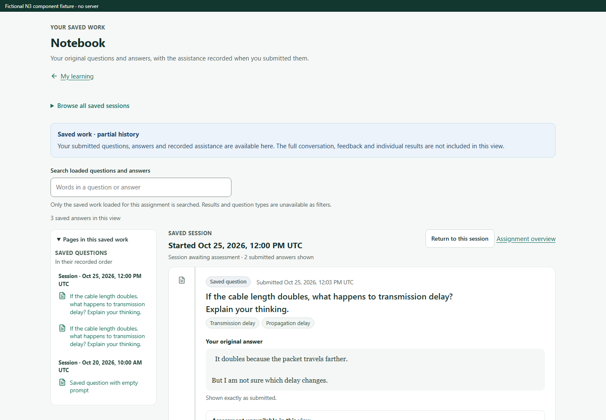
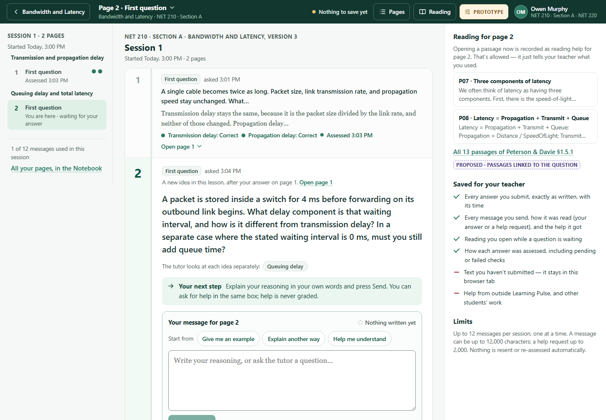
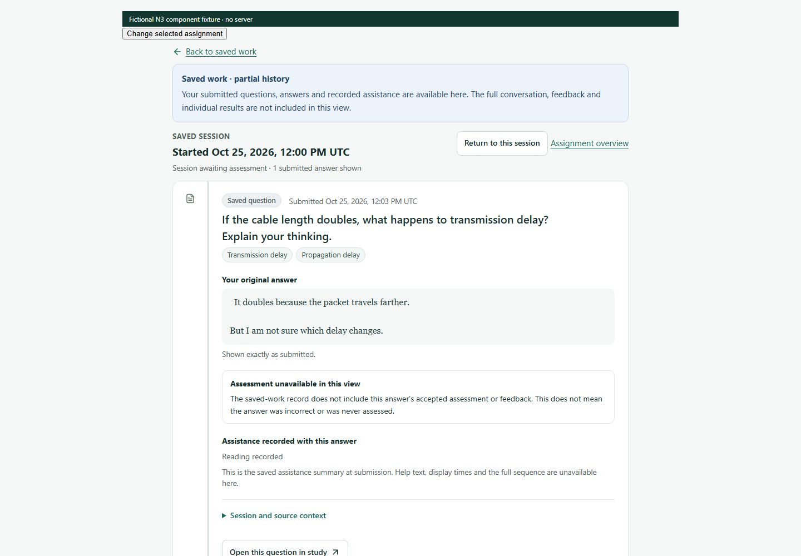
Keyboard focus · Full long original · Empty records · Pending refresh


1024x768
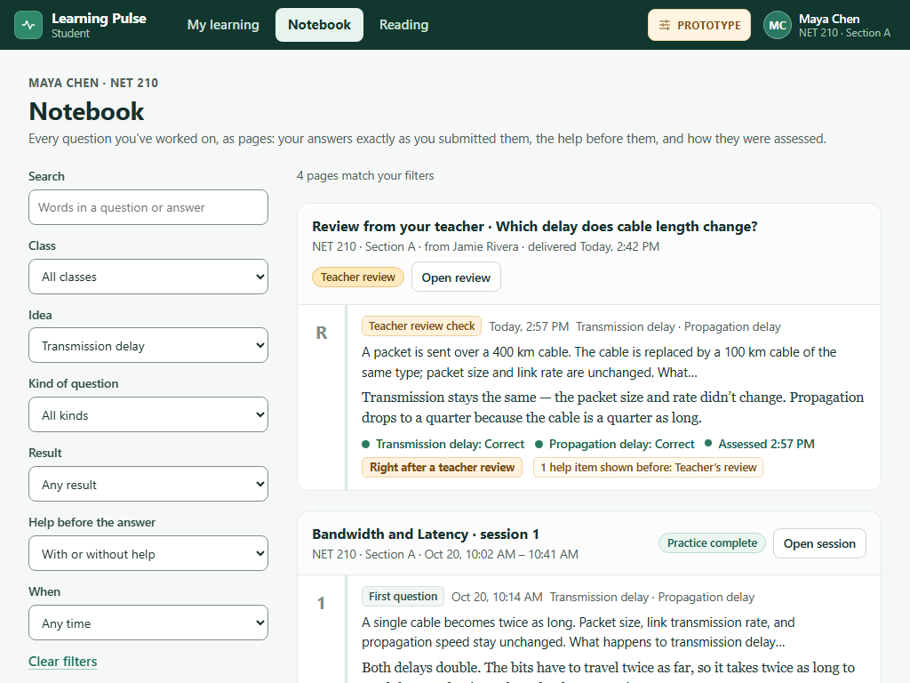
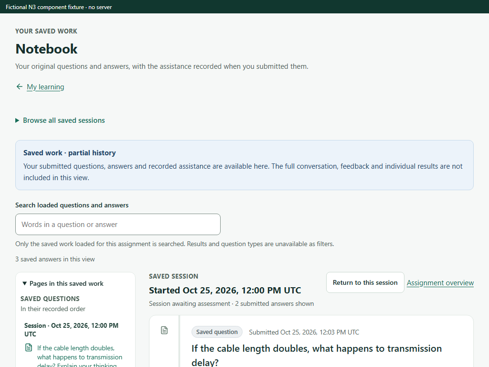
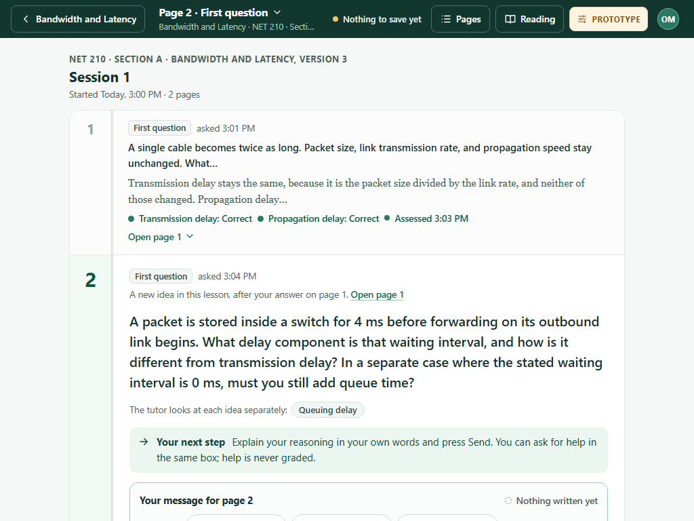
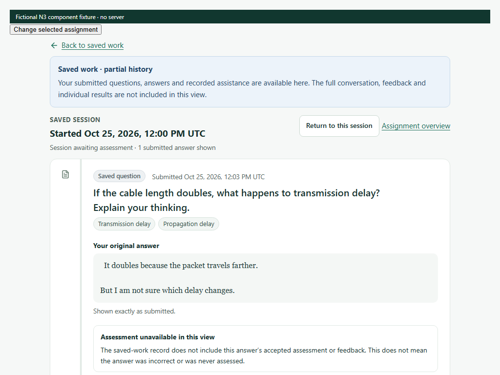
Keyboard focus · Full long original · Empty records · Pending refresh


390x844
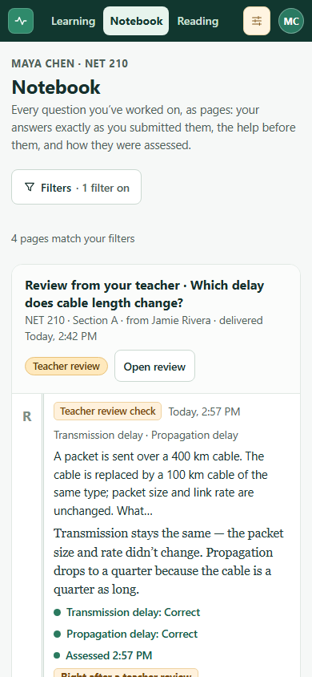
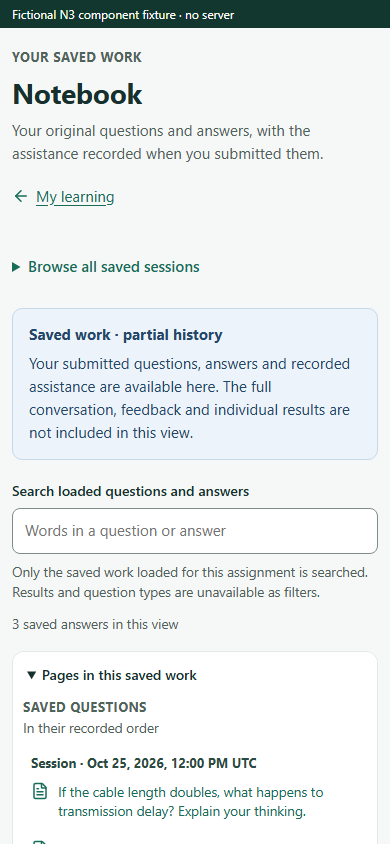
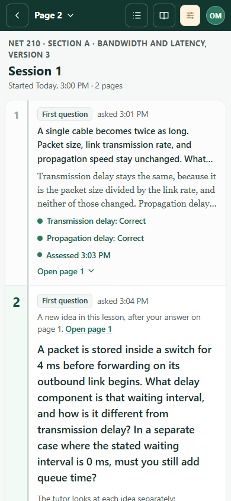
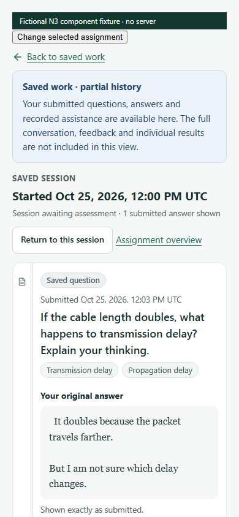
Keyboard focus · Full long original · Empty records · Pending refresh


320x844

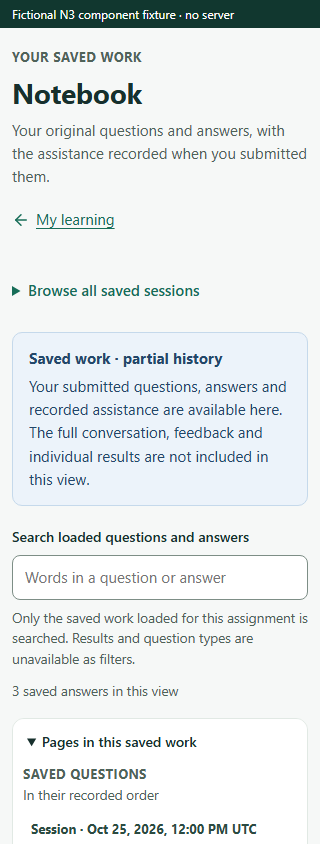
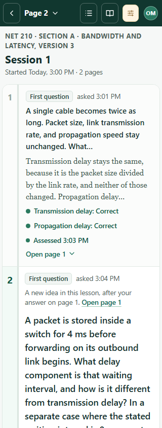
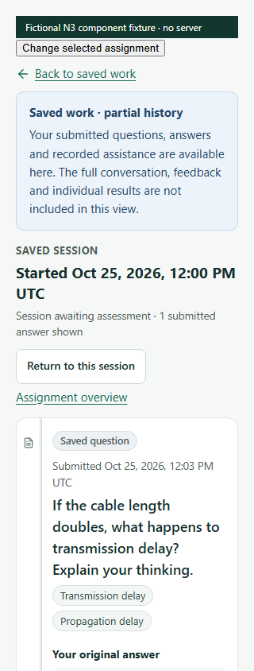
Keyboard focus · Full long original · Empty records · Pending refresh